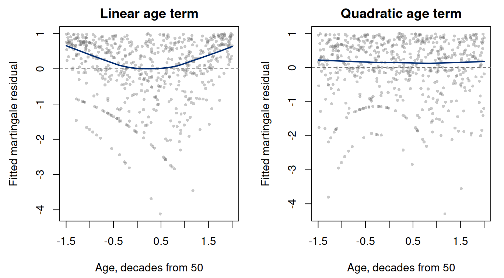
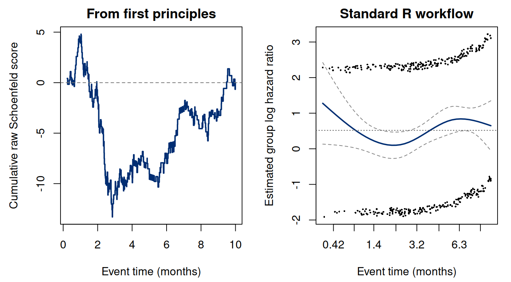
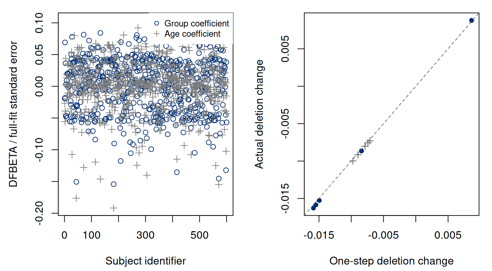
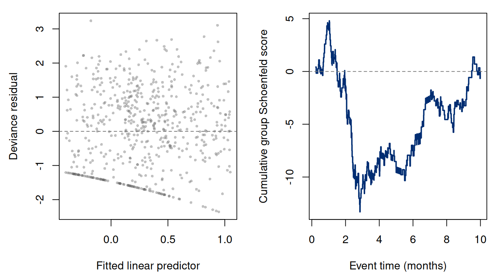

Chapter 9. Diagnostics that answer model questions
9.1 A fitted coefficient is the beginning of a check
The likelihood arguments in Chapters 6–8 explain how to estimate a model. They do not establish that its restrictions describe a new data set. A Cox fit can converge, yield finite standard errors, and still impose the wrong covariate shape or a constant effect where an association changes with time. Conversely, an unusual observation does not automatically imply a defective model.
A useful diagnostic begins with a question: does a straight-line age term represent the association adequately, is the group hazard ratio reasonably constant over time, or does one record disproportionately determine a coefficient? Each asks for a different comparison. We derive the residuals from event intensity and partial likelihood so that their mathematical form tells us what pattern would challenge the fitted model.
We retain independent subjects, noninformative censoring conditional on the modeled information, adequate support, and a correctly defined event and time origin. Diagnostics can reveal tension with a fitted event model; they do not recover an unobserved event history or prove independent censoring. The first calculations use the exact 600-person cohort and Cox fit from Chapters 6 and 7. The nonlinear-age experiment below will reuse its baseline profiles but generate different outcomes.
9.2 Observed minus fitted event accumulation
For a time-fixed -dimensional covariate column vector and matching coefficient vector , the true intensity under the Cox model is Chapter 4 defined a martingale as the observed count minus its true compensator. Its fitted analogue is (9.1) With everyone entering at zero and only a first event, its terminal value is (9.2) Here is observed follow-up time, and is fitted cumulative hazard accumulated during that observed time. We compare it with the observed event count; we are not imputing an event after censoring.
The distinction between a true martingale and a fitted residual matters. Estimating and from the same observations couples the residuals. They are not independent, identically distributed errors with a normal reference law. Their shape is also asymmetric: , while negative values have no finite lower bound. Censoring records have nonpositive residuals because their observed event count is zero.
For the Breslow baseline with the matching risk sets, (9.3) To see why, interchange the person and event-time sums in the fitted compensators. At every event time the total fitted event increment is the observed : Thus fitted observed-minus-expected counts sum to zero by construction. A zero sum is not independent evidence that the model is correct. Changing the baseline estimator, tie convention, or entry mechanism requires corresponding changes to this identity.
9.2.1 From first principles
A base-R calculation uses the parametric-regression cohort (months)
and the fitted Cox coefficients in group/age order. Everyone enters at
zero; event times are distinct. Here expected is fitted
cumulative hazard through observed exit.
Run the complete R example
Dependencies: base R, survival. This complete block includes the data, setup and calculations. Run it in a fresh R session. Short code excerpts above explain individual steps; this block supplies their shared setup. Figures and tables are written to a temporary directory.
Complete R example
# Complete R example. Synthetic data; no external files are required.
biomedical.cohort <- function(n, seed) {
old.seed <- if (exists(".Random.seed", envir=.GlobalEnv)) get(".Random.seed", envir=.GlobalEnv) else NULL
on.exit(if (is.null(old.seed)) {if (exists(".Random.seed", envir=.GlobalEnv)) rm(".Random.seed",envir=.GlobalEnv)} else assign(".Random.seed",old.seed,envir=.GlobalEnv))
set.seed(seed)
z <- rbinom(n,1,.45); age <- runif(n,35,70); age10 <- (age-50)/10
eta <- log(9)-.35*z-.20*age10
event.time <- exp(eta)*(-log(runif(n)))^(1/1.6)
censor.time <- pmin(rexp(n,.035),10)
data.frame(id=seq_len(n),z=z,age=age,age10=age10,
time=pmin(event.time,censor.time),status=as.integer(event.time<=censor.time),
event.time=event.time,censor.time=censor.time)
}
local({
previous.directory <- getwd()
example.directory <- tempfile("biomedical-example-")
dir.create(example.directory)
setwd(example.directory)
on.exit(setwd(previous.directory))
dir.create("generated",showWarnings=FALSE)
# Cox diagnostic calculations and examples.
options(stringsAsFactors=FALSE,digits=10)
library(survival)
dir.create('results',showWarnings=FALSE);dir.create('figures',showWarnings=FALSE)
dat<-biomedical.cohort(600L,675408)
# Fitted event accumulation for the first two participants.
beta <- data.frame(coefficient=unname(stats::coef(survival::coxph(survival::Surv(time,status)~z+age10,data=biomedical.cohort(600L,675408),ties="breslow"))))$coefficient
Z <- as.matrix(dat[c("z", "age10")])
weight <- exp(drop(Z %*% beta))
times <- sort(dat$time[dat$status == 1])
stopifnot(length(beta)==2, all(diff(times)>0))
jump <- vapply(times, function(t) 1 / sum(weight[dat$time >= t]), 0.0)
expected <- weight * c(0, cumsum(jump))[findInterval(dat$time, times) + 1L]
martingale <- dat$status - expected
stopifnot(abs(sum(martingale))<1e-8)
reader.example <- round(cbind(id=dat$id,expected,martingale)[1:2,],6)
capture.output(reader.example,sum(martingale),
file="results/ch11-worked-example.txt")
fit<-survival::coxph(survival::Surv(time,status)~z+age10,
data=dat,ties='breslow',x=TRUE)
# Event-level means/variances, fitted compensators, and subject score integrals.
manual.diagnostics<-function(fit,dat) {
Z<-fit$x;b<-coef(fit);eta<-drop(Z%*%b);w<-exp(eta)
event<-which(dat$status==1);event<-event[order(dat$time[event])]
p<-ncol(Z);m<-length(event);bar<-matrix(0,m,p);V<-array(0,c(p,p,m))
jump<-numeric(m);r<-matrix(0,m,p);scores<-matrix(0,nrow(dat),p)
for(j in seq_len(m)) {
i<-event[j];rr<-which(dat$time>=dat$time[i]);P<-w[rr]/sum(w[rr])
bar[j,]<-colSums(Z[rr,,drop=FALSE]*P)
centered<-sweep(Z[rr,,drop=FALSE],2,bar[j,],'-')
V[,,j]<-crossprod(centered,centered*P)
jump[j]<-1/sum(w[rr]);r[j,]<-Z[i,]-bar[j,]
scores[i,]<-scores[i,]+r[j,]
scores[rr,]<-scores[rr,,drop=FALSE]-centered*P
}
H0<-cumsum(jump);H<-w*c(0,H0)[findInterval(dat$time,dat$time[event])+1L]
M<-dat$status-H
D<-sign(M)*sqrt(pmax(0,-2*(M+ifelse(dat$status==1,log(pmax(H,.Machine$double.eps)),0))))
info<-apply(V,c(1,2),sum)
influence<-scores%*%solve(info)
list(event=event,time=dat$time[event],bar=bar,V=V,r=r,H=H,M=M,D=D,
scores=scores,info=info,dfbeta=influence)
}
d<-manual.diagnostics(fit,dat)
stopifnot(max(abs(martingale-d$M))<1e-6)
stopifnot(max(abs(d$M-residuals(fit,type='martingale')))<1e-9,
max(abs(d$D-residuals(fit,type='deviance')))<1e-8,
max(abs(d$r-unname(residuals(fit,type='schoenfeld'))))<1e-8,
max(abs(d$scores-unname(residuals(fit,type='score'))))<1e-8,
max(abs(d$dfbeta-unname(residuals(fit,type='dfbeta'))))<1e-8,
max(abs(solve(d$info)-vcov(fit)))<1e-9,
abs(sum(d$M))<1e-8,max(abs(colSums(d$r)))<1e-5)
# The routine API preserves the same fitted model, records and time conventions.
package.M <- residuals(fit,type='martingale')
package.D <- residuals(fit,type='deviance')
package.S <- unname(residuals(fit,type='schoenfeld'))
route.comparison <- data.frame(
residual=c('Martingale','Deviance','Schoenfeld'),
units=c('Subjects','Subjects','Events'),
number=c(length(package.M),length(package.D),nrow(package.S)),
max.abs.difference=c(max(abs(d$M-package.M)),max(abs(d$D-package.D)),
max(abs(d$r-package.S))))
write.csv(route.comparison,'results/ch11-computational-routes.csv',row.names=FALSE)
writeLines(c('\\begin{tabular}{llrr}\\toprule',
'Residual & Indexed by & Records & Maximum difference\\\\\\midrule',
vapply(seq_len(nrow(route.comparison)),function(i)sprintf('%s & %s & %d & %.2e\\\\',
route.comparison$residual[i],route.comparison$units[i],route.comparison$number[i],
route.comparison$max.abs.difference[i]),''),'\\bottomrule\\end{tabular}'),
'results/ch11-computational-routes.tex')
write.csv(data.frame(id=dat$id[1:2],status=dat$status[1:2],H=d$H[1:2],
manual.M=d$M[1:2],package.M=package.M[1:2],
manual.D=d$D[1:2],package.D=package.D[1:2]),
'results/ch11-workflow-example.csv',row.names=FALSE)
write.csv(data.frame(package=c('R','survival'),
version=c(as.character(getRversion()),as.character(packageVersion('survival')))),
'results/ch11-package-versions.csv',row.names=FALSE)
# Independent small arithmetic checks used in the instructor exercises.
event.D <- sqrt(-2*(.75+log(.25)))
censor.D <- -sqrt(2*2)
stopifnot(abs(event.D-1.128091)<1e-6, censor.D==-2)
residuals.table<-data.frame(id=dat$id,time=dat$time,status=dat$status,z=dat$z,age10=dat$age10,
H=d$H,martingale=d$M,deviance=d$D,
dfbeta.z=d$dfbeta[,1],dfbeta.age=d$dfbeta[,2])
write.csv(residuals.table,'results/ch11-subject-diagnostics.csv',row.names=FALSE)
write.csv(data.frame(time=d$time,sch.z=d$r[,1],sch.age=d$r[,2],
cumulative.z=cumsum(d$r[,1]),cumulative.age=cumsum(d$r[,2])),
'results/ch11-event-diagnostics.csv',row.names=FALSE)
# First-principles score test for beta(t)=beta+gamma*g(t), with nuisance beta adjusted.
g<-log1p(d$time);g<-g-mean(g)
Ugamma<-colSums(d$r*g)
Ibb<-d$info
Igb<-apply(sweep(d$V,3,g,'*'),c(1,2),sum)
Igg<-apply(sweep(d$V,3,g^2,'*'),c(1,2),sum)
Ieff<-Igg-Igb%*%solve(Ibb)%*%t(Igb)
Qglobal<-drop(t(Ugamma)%*%solve(Ieff)%*%Ugamma)
zph<-survival::cox.zph(fit,transform=function(t)log1p(t/1),
terms=TRUE,singledf=FALSE,global=TRUE)
# The default KM time transform tests a different time-interaction direction.
zph.km<-survival::cox.zph(fit,transform='km')
stopifnot(abs(Qglobal-zph$table['GLOBAL','chisq'])<1e-5)
ph<-data.frame(quantity=c('Ugamma.z','Ugamma.age','global.score.chisq','global.score.p'),
value=c(Ugamma,Qglobal,pchisq(Qglobal,2,lower.tail=FALSE)))
write.csv(ph,'results/ch11-ph-score.csv',row.names=FALSE)
write.csv(data.frame(term=rownames(zph$table),zph$table),
'results/ch11-cox-zph.csv',row.names=FALSE)
ph.routes<-data.frame(route=c('Manual log(1+t)','Package log(1+t)','Package KM transform'),
chisq=c(Qglobal,zph$table['GLOBAL','chisq'],zph.km$table['GLOBAL','chisq']),
df=2,p=c(pchisq(Qglobal,2,lower.tail=FALSE),zph$table['GLOBAL','p'],zph.km$table['GLOBAL','p']))
write.csv(ph.routes,'results/ch11-ph-workflows.csv',row.names=FALSE)
writeLines(c('\\begin{tabular}{lrrr}\\toprule',
'Time-interaction calculation & Statistic & df & p-value\\\\\\midrule',
vapply(seq_len(nrow(ph.routes)),function(i)sprintf('%s & %.6f & %d & %.6f\\\\',
ph.routes$route[i],ph.routes$chisq[i],ph.routes$df[i],ph.routes$p[i]),''),
'\\bottomrule\\end{tabular}'),'results/ch11-ph-workflows.tex')
# One-step case deletion is an approximation; compare actual refits for the largest cases.
standardized<-sweep(d$dfbeta,2,sqrt(diag(vcov(fit))),'/')
ranked<-order(apply(abs(standardized),1,max),decreasing=TRUE)[1:5]
deletion<-do.call(rbind,lapply(ranked,function(i) {
deleted<-coxph(Surv(time,status)~z+age10,data=dat[-i,],ties='breslow')
exact<-coef(fit)-coef(deleted)
data.frame(id=dat$id[i],time=dat$time[i],status=dat$status[i],
approx.z=d$dfbeta[i,1],exact.z=exact[1],
approx.age=d$dfbeta[i,2],exact.age=exact[2])
}))
write.csv(deletion,'results/ch11-deletion-refits.csv',row.names=FALSE)
# Same baseline profiles, separate new outcomes with a prespecified quadratic age effect.
set.seed(675411)
a<-dat$age10
eta.true<-.56*dat$z+.32*a+.60*a^2
T<-9*(rexp(nrow(dat))/exp(eta.true))^(1/1.6)
C<-pmin(rexp(nrow(dat),.035),10)
nonlinear<-data.frame(id=dat$id,z=dat$z,age10=a,time=pmin(T,C),status=as.integer(T<=C))
linear<-coxph(Surv(time,status)~z+age10,data=nonlinear,ties='breslow',x=TRUE)
quadratic<-coxph(Surv(time,status)~z+age10+I(age10^2),data=nonlinear,ties='breslow',x=TRUE)
dl<-manual.diagnostics(linear,nonlinear);dq<-manual.diagnostics(quadratic,nonlinear)
LR<-2*(quadratic$loglik[2]-linear$loglik[2]);LRp<-pchisq(LR,1,lower.tail=FALSE)
stopifnot(LR>=0,all(is.finite(dl$M)),all(is.finite(dq$M)))
write.csv(nonlinear,'results/ch11-nonlinear-cohort.csv',row.names=FALSE)
write.csv(data.frame(id=nonlinear$id,age10=a,M.linear=dl$M,M.quadratic=dq$M),
'results/ch11-functional-form-residuals.csv',row.names=FALSE)
coefs<-data.frame(term=names(coef(quadratic)),truth=c(.56,.32,.60),
linear=c(coef(linear),NA),quadratic=coef(quadratic))
write.csv(coefs,'results/ch11-functional-form-coefficients.csv',row.names=FALSE)
summary<-data.frame(quantity=c('original.events','sum.martingale','max.manual.residual.error',
'global.logtime.ph.p','quadratic.events','quadratic.lr','quadratic.lr.p'),
value=c(sum(dat$status),sum(d$M),
max(abs(d$M-residuals(fit,type='martingale'))),
pchisq(Qglobal,2,lower.tail=FALSE),sum(nonlinear$status),LR,LRp))
write.csv(summary,'results/ch11-summary.csv',row.names=FALSE)
tab<-c('\\begin{tabular}{lrrr}\\toprule','Term & Generating value & Linear fit & Quadratic fit\\\\\\midrule',
vapply(seq_len(nrow(coefs)),function(i)sprintf('%s & %.3f & %s & %.4f\\\\',
c('Group $z$','Age $a$','Age $a^2$')[i],coefs$truth[i],
ifelse(is.na(coefs$linear[i]),'--',sprintf('%.4f',coefs$linear[i])),coefs$quadratic[i]),''),
'\\bottomrule\\end{tabular}')
writeLines(tab,'results/ch11-functional-form-table.tex')
save.plot<-function(stem,draw,width=7.6,height=4.2) {
cairo_pdf(paste0('figures/',stem,'.pdf'),width,height,family='serif');draw();dev.off()
png(paste0('figures/',stem,'.png'),width*180,height*180,res=180);draw();dev.off()
}
save.plot('ch11-functional-form',function(){
par(mfrow=c(1,2),mar=c(4.3,4.5,2,1))
for(j in 1:2) {
M<-if(j==1)dl$M else dq$M
plot(a,M,col=adjustcolor('gray40',alpha.f=.35),pch=16,cex=.6,
xlab='Age, decades from 50',ylab='Fitted martingale residual',
main=c('Linear age term','Quadratic age term')[j])
abline(h=0,lty=2,col='gray45');lines(lowess(a,M,f=.65),lwd=2,col='#002D72')
}
})
save.plot('ch11-residuals',function(){
par(mfrow=c(1,2),mar=c(4.3,4.5,1,1))
lp<-drop(fit$x%*%coef(fit))
plot(lp,d$D,pch=16,cex=.55,col=adjustcolor('gray40',.4),
xlab='Fitted linear predictor',ylab='Deviance residual')
abline(h=0,lty=2,col='gray45')
plot(d$time,cumsum(d$r[,1]),type='s',lwd=2,col='#002D72',
xlab='Event time (months)',ylab='Cumulative group Schoenfeld score')
abline(h=0,lty=2,col='gray45')
})
save.plot('ch11-ph-workflow',function(){
par(mfrow=c(1,2),mar=c(4.3,4.5,2,1))
plot(d$time,cumsum(d$r[,1]),type='s',lwd=2,col='#002D72',
xlab='Event time (months)',ylab='Cumulative raw Schoenfeld score',
main='From first principles')
abline(h=0,lty=2,col='gray45')
plot(zph,var='z',df=4,resid=TRUE,se=TRUE,pch=16,cex=.35,
col=c('#002D72','gray50'),lwd=c(2,1),
xlab='Event time (months)',ylab='Estimated group log hazard ratio',
main='Standard R workflow')
abline(h=coef(fit)['z'],lty=3,col='gray35')
})
save.plot('ch11-influence',function(){
par(mfrow=c(1,2),mar=c(4.3,4.5,1,1))
matplot(dat$id,standardized,pch=c(1,3),col=c('#002D72','gray50'),
xlab='Subject identifier',ylab='DFBETA / full-fit standard error')
legend('topright',c('Group coefficient','Age coefficient'),pch=c(1,3),
col=c('#002D72','gray50'),bty='o',bg='white',box.col='white',cex=.8)
rng<-range(c(deletion$approx.z,deletion$exact.z,deletion$approx.age,deletion$exact.age))
plot(deletion$approx.z,deletion$exact.z,pch=16,col='#002D72',xlim=rng,ylim=rng,
xlab='One-step deletion change',ylab='Actual deletion change')
points(deletion$approx.age,deletion$exact.age,pch=3,col='gray35')
abline(0,1,lty=2,col='gray40')
})
capture.output(sessionInfo(),file='results/ch11-sessionInfo.txt')
print(summary);print(coefs);print(deletion);print(zph$table)
print(route.comparison);print(ph.routes)
cat("\nSelected numerical results\n")
for (candidate in c("reader", "summary", "summary.mc", "perf", "comparison", "route.comparison", "test", "tab", "exact", "workflow.ci", "coef.tab", "evaluation.table")) {
if (exists(candidate, inherits=FALSE)) {
value <- get(candidate, inherits=FALSE)
if (is.data.frame(value) || is.matrix(value)) { cat(candidate, "\n"); print(utils::head(value,8)) }
}
}
cat("R", as.character(getRversion()), "\n")
})
This excerpt shows a step inside the preceding complete R example; it uses that block’s data and setup.
dat <- biomedical.cohort(600L,675408)
beta <- data.frame(coefficient=unname(stats::coef(survival::coxph(survival::Surv(time,status)~z+age10,data=biomedical.cohort(600L,675408),ties="breslow"))))$coefficient
Z <- as.matrix(dat[c("z", "age10")])
weight <- exp(drop(Z %*% beta))
times <- sort(dat$time[dat$status == 1])
jump <- vapply(times, function(t) 1 / sum(weight[dat$time >= t]), 0.0)
expected <- weight * c(0, cumsum(jump))[findInterval(dat$time, times) + 1L]
martingale <- dat$status - expected
round(cbind(id = dat$id, expected, martingale)[1:2, ], 6)
sum(martingale)Subject 1’s event gives and ; censored subject 2 gives and . The numerical zero sum checks Equation (9.3)’s construction; model validity requires separate assessment.
9.2.2 Standard R workflow
Fit the same Cox model and ask explicitly for the residual whose statistical question is relevant [9].
This excerpt shows a step inside the preceding complete R example; it uses that block’s data and setup.
fit <- survival::coxph(survival::Surv(time,status) ~ z + age10,
data=dat, ties="breslow", x=TRUE)
M <- residuals(fit, type="martingale")
D <- residuals(fit, type="deviance")
S <- residuals(fit, type="schoenfeld")
round(cbind(M, D)[1:2, ], 6)The two displayed rows are and for martingale and deviance residuals. We next derive the deviance transformation and the event-level Schoenfeld residual. Comparing each formula with its package calculation gives:
| Residual | Indexed by | Records | Maximum difference |
|---|---|---|---|
| Martingale | Subjects | 600 | 1.11e-15 |
| Deviance | Subjects | 600 | 6.22e-15 |
| Schoenfeld | Events | 385 | 6.66e-16 |
Martingale and deviance residuals have one entry per subject here;
Schoenfeld residuals have one row per event. Align records and event
order before a comparison. Breslow tie handling is explicit, although
this cohort has distinct event times and hence no tie approximation to
reconcile. For tied times, weighted records, delayed entry, or multiple
intervals per person, the corresponding manual risk-set construction
must change as well. The x=TRUE option retains the model
matrix for the subsequent time-pattern diagnostic; it does not alter the
target coefficient.
9.3 Functional form: look for systematic discrepancies
A continuous covariate can enter as a straight line, a prespecified transformation, or a spline basis. Each choice says how conditional log hazard varies with that covariate. Plotting fitted martingale residuals against age can reveal systematic shape left after the chosen representation. A smoother is an aid to seeing a pattern, not a new inferential guarantee.
The residual is an omnibus observed-minus-expected count, not an estimate of the age-response function itself. If age has already entered the fit, its coefficient score has imposed an aggregate constraint, while the smoother can still reveal a shape that the chosen linear term misses. A persisting trend motivates comparison of plausible forms; it does not identify a unique correction from the plot alone.
The scatter will remain asymmetric even for an appropriate model. Expecting a symmetric cloud like linear-regression errors is the wrong criterion. The relevant question is whether a persistent trend suggests a missing component of the event model. Censoring, sparse covariate extremes, omitted correlated variables, and the smoother’s tuning also affect what can be seen. A diagnostic should state which covariates were already adjusted for, rather than attributing every residual trend to one omitted transformation.
For a controlled experiment, the complete R example retains the parametric-regression cohort’s 600 baseline profiles but generates separate outcomes from (9.4) with Weibull baseline shape 1.6 and scale 9. Independent censoring and month-10 administrative closure are retained. The quadratic term is specified before generating the experiment; it is not selected by trying many shapes on an unknown data set.
| Term | Generating value | Linear fit | Quadratic fit |
|---|---|---|---|
| Group | 0.560 | 0.5364 | 0.5465 |
| Age | 0.320 | 0.5844 | 0.3510 |
| Age | 0.600 | – | 0.6418 |
There are 468 events. Omitting the square gives an age coefficient , compared with its generating linear component . Including the prespecified square gives linear and quadratic estimates and . Those coefficients describe a curve together; the linear term alone is not a constant age effect when the square is present. A change from to has log hazard ratio .


The nested partial-likelihood comparison gives , with one additional coefficient and approximate . This is evidence for the added term in this specified experiment. In a real exploratory analysis, selecting knots, transformations, and covariates after inspecting these same plots changes the procedure. Report that exploration and use suitable validation or prespecified confirmation; a final selected-model probability does not account for an entire search.
9.4 Deviance residuals: transform the scale, keep the limits
Martingale residuals retain the observed-minus-fitted count calculation, but their long negative tail can make records difficult to compare visually. We keep that information and transform its scale through the deviance residual: (9.5) where the product involving is defined as zero. Since , an event term uses the log fitted cumulative hazard. At , define the residual as zero, including any removable limit.
For an event, the expression inside the square root is , nonnegative by . For censoring it is . These relations check both the formula and numerical implementation. They also explain the sign: a positive event residual means the event arrived with less fitted hazard accumulated than one, while a negative value means more accumulated hazard. A censored subject’s negative value reports an event-free observation longer than its fitted hazard scale might suggest; it does not assign an event at the censoring time.
9.4.1 From first principles
The transformation can be calculated directly from the same fitted cumulative hazards used for the martingale residuals:
This excerpt shows a step inside the preceding complete R example; it uses that block’s data and setup.
H <- expected
M <- dat$status-H
inside <- 2*H
event <- dat$status == 1
inside[event] <- 2*(H[event]-1-log(H[event]))
deviance <- sign(M)*sqrt(pmax(inside, 0))The nonnegative truncation protects against a small negative roundoff value near ; it is not a way to repair a materially negative expression. An event with has both residuals zero. At a censoring exit with , define the residual by its zero limit without evaluating a logarithm.
9.4.2 Standard R workflow
residuals(fit, type="deviance") applies the same
transformation to the fitted martingale residuals. It supplies a
convenient observation-scale diagnostic, not a new error distribution.
For this cohort, the manual and package values agree to floating-point
accuracy; the contrast is between transparent arithmetic and a
maintained implementation of that arithmetic.
The transformation makes a residual plot less severely skewed. It does not establish normality, equal variance, independence, or a universally valid cutoff at two standard deviations. Outlying residuals deserve investigation of timing, endpoint ascertainment, units, and model structure. Valid observations can be extreme under a correct distribution. Deleting them merely because they make a plot uncomfortable changes the population and the analysis.
9.5 Schoenfeld residuals connect events to the score
The preceding residuals summarize a person’s accumulated follow-up. To examine whether an association changes over time, we instead return to the covariate comparison at each event. At a distinct event time , let be the subject who fails. The event-level Schoenfeld residual vector is (9.6) It is observed event covariate minus its model-weighted risk-set expectation. There is one vector per event, not one ordinary residual per censored person. The cumulative score process is (9.7) The cumulative representation lets us see whether early and late score contributions move systematically in opposite directions. Its endpoint is zero because we fitted the score equation; the path leading there can still reveal a time pattern.
Under a correctly specified constant coefficient, observed-minus-expected event contributions have the appropriate conditional mean-zero structure. A trend in event-level residuals, or in their suitably scaled version, can suggest a changing association. Their information varies with the risk set, so plotting unscaled points is exploratory rather than a complete test. End-of-follow-up behavior is particularly unstable when only a few covariate profiles remain. Correct interpretation combines event-time support, a stated time transformation, and an appropriate variance calculation.
The script calculates and the weighted risk-set covariance explicitly. Their sum agrees with the fitted score and information. The complete R example calculates each event-level residual and its cumulative path, so we can connect the plotted pattern to the risk-set calculation.
9.6 A time-interaction score test from first principles
For a chosen scalar function , consider the local alternative (9.8) Here is a vector of the same dimension as . At , differentiating each event factor gives the score The information blocks are (9.9) Because is estimated rather than known, the relevant efficient information is (9.10) With the usual model and information regularity, the global statistic is approximately chi-squared with dimension equal to that of . A singular information matrix indicates that the selected interaction is not supported; inversion is not a substitute for identifiable variation.
This nuisance adjustment is the same statistical principle encountered in likelihood inference: changing a parameter can be partly mimicked by refitting other parameters. Subtracting the cross-information term removes that component. Replacing by changes the interpretation of but not the fitted model family; the efficient statistic is unchanged. The R implementation centers the chosen transformation for arithmetic stability.
For one coefficient, let be its risk-set variance. The same Schur complement has the especially transparent form The information concerns time variation that cannot be absorbed by one constant coefficient. If is constant at all informative event times, and the proposed new coefficient is not identifiable. More events alone do not repair this absence of time contrast. In the multi-covariate calculation below, the matrix Schur complement plays the same role and also accounts for correlations among the coefficients.
9.6.1 From first principles
For the original parametric-regression cohort, choose
with
month. The global test has statistic
on two degrees of freedom and
.
Manual risk-set information agrees with cox.zph using the
same transformation. The generating model has constant coefficients, but
that
-value
does not establish proportional hazards. This test targets this
particular time-interaction direction and can have limited power.
Selecting
after seeing which transformation rejects most strongly would require
accounting for that selection.
We can implement this matrix calculation using the event-level
residuals d$r and risk-set covariance array
d$V:
This excerpt shows a step inside the preceding complete R example; it uses that block’s data and setup.
g <- log1p(d$time/1)
g <- g-mean(g)
U <- colSums(d$r*g)
Ibb <- apply(d$V, c(1,2), sum)
Igb <- apply(sweep(d$V, 3, g, "*"), c(1,2), sum)
Igg <- apply(sweep(d$V, 3, g^2, "*"), c(1,2), sum)
Jeff <- Igg-Igb %*% solve(Ibb) %*% t(Igb)
Q <- drop(t(U) %*% solve(Jeff) %*% U)This code computes a score statistic for the specified time interaction; it does not fit an unrestricted time-varying coefficient curve.
9.6.2 Standard R workflow
Use the same transformation in survival::cox.zph() to
compare the same statistical calculation [10].
This excerpt shows a step inside the preceding complete R example; it uses that block’s data and setup.
ph <- survival::cox.zph(fit, transform=function(t) log1p(t/1),
terms=TRUE, singledf=FALSE, global=TRUE)
ph$table
plot(ph, var="z", df=4, resid=TRUE, se=TRUE)| Time-interaction calculation | Statistic | df | p-value |
|---|---|---|---|
| Manual log(1+t) | 3.542603 | 2 | 0.170111 |
| Package log(1+t) | 3.542603 | 2 | 0.170111 |
| Package KM transform | 4.276805 | 2 | 0.117843 |
The first two rows agree because their data, fitted null model, and
time transformation agree. The last row uses the package default
transform="km". It tests variation along a different
transformed time direction, so its different statistic is expected.
Choose and report the transformation as part of the diagnostic question
rather than selecting one because it gives a preferred probability. The
displayed global test has two interaction coefficients; a multi-level
factor would require attention to term-wise versus coefficient-wise
degrees of freedom.


Under proportional hazards, the package curve should be reasonably horizontal, not centered at zero: it estimates the coefficient’s time pattern. Its approximate limits are pointwise descriptive uncertainty for the smoother, not a simultaneous model-acceptance band. A smooth curve can differ from the score test because the display uses a spline while the test uses the selected one-dimensional time transformation. Read both in regions where the event and risk-set information support the comparison.
9.7 Influence: would one record move the conclusion?
A large residual and a large influence are different. An observation can fit poorly but contribute little information about a coefficient; another can have moderate residual size and considerable leverage because its covariate is rare in informative risk sets.
For matching Breslow and distinct-event conventions, a subject-level score contribution can be written (9.11) This includes both the observed event contribution, if any, and the person’s exposure to every earlier weighted risk set. A censored person can therefore influence a coefficient. Assigning all influence to observed events would miss part of the likelihood.
Let be the estimate after removing subject . To see the linearization, perturb subject ’s case weight from one to . Both their event contribution and their presence in every risk denominator change. The first-order score change at the full fit is , whereas a coefficient change changes the score by . Solving gives . Setting yields the one-step deletion approximation (9.12) The sign convention matters. A negative component means the full-data coefficient is smaller than its approximate deletion estimate. Dividing a component by the full-fit standard error makes its scale easier to compare, but does not make it a hypothesis-test statistic.
In the recurring cohort, subject 182 is one of the largest standardized influences even though its record is censored at month 10. Its approximate group-coefficient deletion change is ; actual refitting gives . The age changes are and . The script refits the five largest cases and exports both calculations. Their disagreement is visible and expected: the one-step expression is an approximation, not an exact deletion identity for a nonlinear estimator.


If one person is represented by several follow-up intervals, deletion and influence assessment should concern that person, not arbitrarily one row. Dependence within families, centers, or repeated-event histories can also require cluster-level diagnostics and suitable covariance calculations.
9.7.1 Order the checks by the question they can answer
Begin by checking the records that define the risk sets: event codes, time units, impossible negative durations, duplicate subjects, and whether delayed entry was encoded. A model fitted to the wrong clock can have internally consistent residual calculations. For example, changing from time since enrollment to attained age requires age at entry as well as age at exit; it is not achieved by relabeling one column.
Next examine the covariate representation and support before interpreting a time-pattern test. A missing nonlinear age term can produce apparent changing effects as the risk-set age distribution evolves. Conversely, a correct covariate shape cannot repair a truly changing group association. Compare scientifically motivated alternatives and state which restrictions each relaxes. Avoid a sequence whose only stopping rule is that every diagnostic probability exceeds a chosen cutoff.
Finally separate record-level influence from model-level adequacy. Refit influential valid cases as a sensitivity analysis, showing whether the scientific conclusion depends on them. If a timing or coding error is documented, correct it and preserve an audit of the correction. If no error is found, keep the observation and describe the sensitivity. These checks connect a diagnostic pattern to a model restriction or a recorded observation. A collection of plausible plots cannot replace that argument.
9.8 What a residual plot cannot certify
Cox–Snell residuals transform an observed time by its fitted cumulative hazard. If a continuous true event model were known, would be unit exponential conditional on . The observed residual is censored at the transformed censoring time, so its status must be retained when comparing its estimated cumulative hazard with a diagonal line. Treating every transformed censoring exit as a complete exponential observation would repeat the original censoring error.
When coefficients and a flexible baseline are estimated from the same data, agreement of this plot is partly encouraged by fitting. We use it to ask whether the fitted event-time distribution leaves systematic departures on the cumulative-hazard scale. A quiet pooled graph can still conceal an inadequate covariate effect, and it cannot establish independent censoring. Those questions require the separate checks developed above.


A diagnostic becomes useful when it changes a specific part of the analysis: correcting a unit error, comparing a plausible covariate representation, examining a prespecified time interaction, or reporting a sensitivity refit. Preserve valid records in the primary analysis unless an independently defensible eligibility or data-quality rule excludes them. Explain what changed and why. A favorable plot obtained by deleting inconvenient observations is not the same evidence as a robust model fitted to the intended population.
9.9 Exercises
A zero imposed by fitting. For independent right-censored fixed-covariate Cox records, use fitted Breslow increments and fitted cumulative hazards . Prove under this matching event-first convention. Explain why the identity does not prove correct covariate effects or independent censoring, and why fitted residuals are not independent true martingale errors.
Interpret a nonlinear age association. Suppose the PH linear predictor includes group, and , where is a declared centered/scaled age measurement. Derive the log hazard ratio for changing to while holding group fixed. In the chapter’s prespecified quadratic-age experiment, fitted linear and square components are and and the partial-likelihood-ratio statistic against the linear-age model is . State the null and asymptotic degrees of freedom, then explain why choosing the quadratic form after searching many alternatives changes interpretation of that test.
A score path can end at zero and still move. For distinct event times, define Schoenfeld residuals . Derive their sum from the partial-likelihood score at an interior fitted optimum. Construct a scalar residual sequence with terminal sum zero but a nonzero earlier cumulative sum. Explain why the fitted endpoint neither proves proportional hazards nor makes the intervening time pattern irrelevant; include the role of censored people and risk-set information.
Adjust the time-interaction score for the fitted slope. For the Cox local model with fixed scalar transformation , both and are -columns. At the fitted constant-effect null, let be event scores and their weighted risk-set covariance matrices. Derive the score , information blocks and nuisance-adjusted Schur complement for testing . Assuming nonsingular identifiable information, prove that replacing by leaves the efficient statistic unchanged. For , show that the efficient information equals and explain the constant- boundary.
Censored observations can influence slopes. Under the same fixed-covariate model, derive both the event and fitted-intensity terms in a subject’s score contribution. Explain why a censored person can affect the coefficients. Use the chapter’s subject-182 comparison: full fit minus deletion fit is in the one-step approximation and after refitting, in group/age order. Interpret the signs and discrepancy. Specify what records or eligibility facts you would investigate before exclusion and how to report sensitivity for an influential valid record.